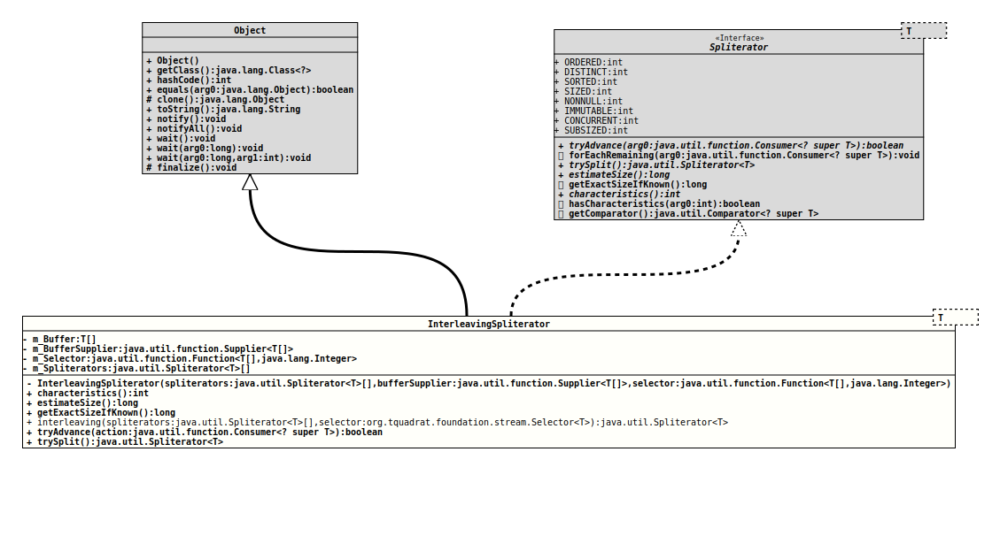

Module org.tquadrat.foundation.base
Class InterleavingSpliterator<T>
java.lang.Object
org.tquadrat.foundation.stream.internal.InterleavingSpliterator<T>
- Type Parameters:
T- The type of the values to select from.
- All Implemented Interfaces:
Spliterator<T>
@ClassVersion(sourceVersion="$Id: InterleavingSpliterator.java 1031 2022-04-07 22:43:02Z tquadrat $")
@API(status=INTERNAL,
since="0.0.7")
public final class InterleavingSpliterator<T>
extends Object
implements Spliterator<T>
A selector function takes an array of values and returns the respective
array index for the selected value. See
Selectors
for some implementations of this interface.- Author:
- Dominic Fox
- Modified by:
- Thomas Thrien (thomas.thrien@tquadrat.org)
- Version:
- $Id: InterleavingSpliterator.java 1031 2022-04-07 22:43:02Z tquadrat $
- Since:
- 0.0.7
- UML Diagram
-

UML Diagram for "org.tquadrat.foundation.stream.internal.InterleavingSpliterator"
{kind=link}
-
Nested Class Summary
Nested classes/interfaces inherited from interface java.util.Spliterator
Spliterator.OfDouble, Spliterator.OfInt, Spliterator.OfLong, Spliterator.OfPrimitive<T extends Object,T_CONS extends Object, T_SPLITR extends Spliterator.OfPrimitive<T, T_CONS, T_SPLITR>> -
Field Summary
FieldsModifier and TypeFieldDescriptionprivate T[]The element buffer.The supplier for the element buffer.The selector function.private final Spliterator<T>[]The source spliterators.Fields inherited from interface java.util.Spliterator
CONCURRENT, DISTINCT, IMMUTABLE, NONNULL, ORDERED, SIZED, SORTED, SUBSIZED -
Constructor Summary
ConstructorsModifierConstructorDescriptionprivateInterleavingSpliterator(Spliterator<T>[] spliterators, Supplier<T[]> bufferSupplier, Function<T[], Integer> selector) Creates a newInterleavingSpliteratorinstance. -
Method Summary
Modifier and TypeMethodDescriptionfinal intfinal longfinal longstatic final <T> Spliterator<T>interleaving(Spliterator<T>[] spliterators, Selector<T> selector) Factory method for instances ofInterleavingSpliterator.final booleantryAdvance(Consumer<? super T> action) final Spliterator<T>trySplit()Methods inherited from class java.lang.Object
clone, equals, finalize, getClass, hashCode, notify, notifyAll, toString, wait, wait, waitMethods inherited from interface java.util.Spliterator
forEachRemaining, getComparator, hasCharacteristics
-
Field Details
-
m_Buffer
The element buffer. -
m_BufferSupplier
The supplier for the element buffer. -
m_Selector
The selector function. -
m_Spliterators
The source spliterators.
-
-
Constructor Details
-
InterleavingSpliterator
private InterleavingSpliterator(Spliterator<T>[] spliterators, Supplier<T[]> bufferSupplier, Function<T[], Integer> selector) Creates a newInterleavingSpliteratorinstance.- Parameters:
spliterators- The source spliterators.bufferSupplier- The supplier for the element buffer.selector- The selector function.
-
-
Method Details
-
characteristics
- Specified by:
characteristicsin interfaceSpliterator<T>
-
estimateSize
- Specified by:
estimateSizein interfaceSpliterator<T>
-
getExactSizeIfKnown
- Specified by:
getExactSizeIfKnownin interfaceSpliterator<T>
-
interleaving
public static final <T> Spliterator<T> interleaving(Spliterator<T>[] spliterators, Selector<T> selector) Factory method for instances ofInterleavingSpliterator.- Type Parameters:
T- The type of the values to select from.- Parameters:
spliterators- The source spliterators.selector- The selector function.- Returns:
- The interleaving spliterator.
-
tryAdvance
- Specified by:
tryAdvancein interfaceSpliterator<T>
-
trySplit
- Specified by:
trySplitin interfaceSpliterator<T>
-